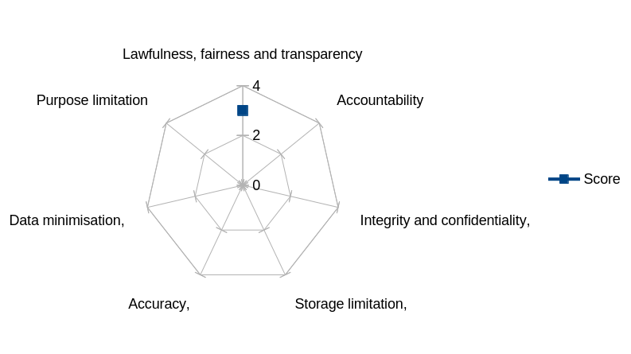
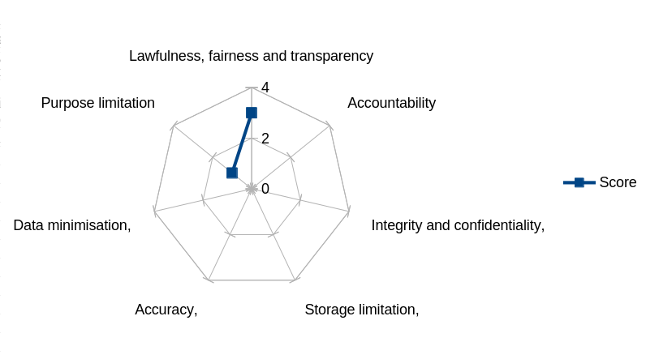
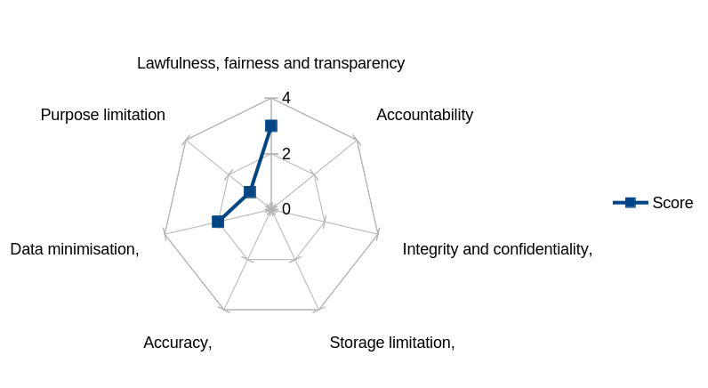
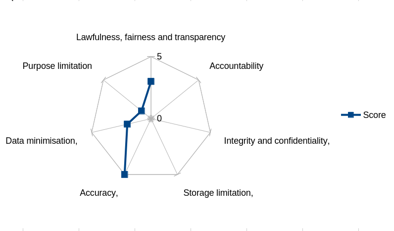
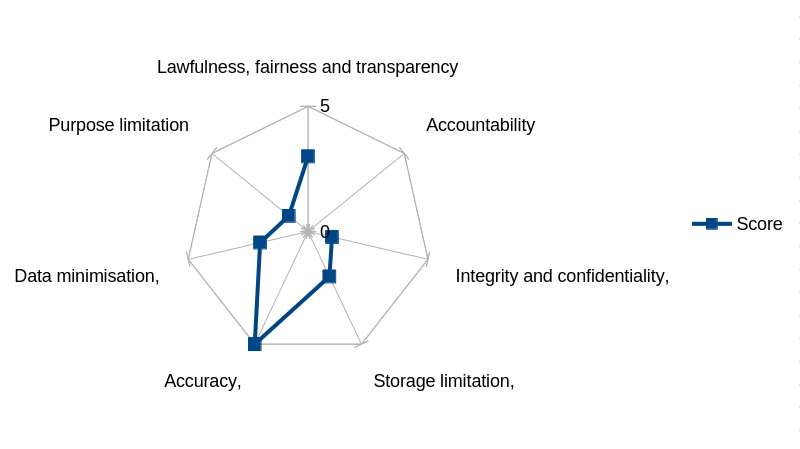
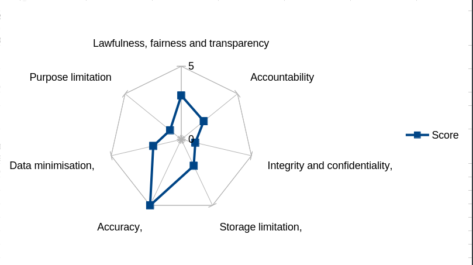

Doctor Who and the Distinct Lack of Data Protection Regulations
When you find yourself on an alien planet, your number one priority should be asking "How are they using my personal data?"
Doctor Who is a long-running British science-fiction series, with Gallifrey - the home of the Time Lords such as the main character the Doctor - a recurring planet in it. At no point in the show has any writer discussed what the data protection regulations are like there, presumably due to strange ideas about what counts as "engaging storytelling".
Good job I'm here!
What?
The Data Protection Act (DPA) 2018 lays out how personal data must be collected and stored in order to protect people's privacy. It has seven principles:
-
Lawfulness, fairness and transparency,
-
Purpose limitation,
-
Data minimisation,
-
Accuracy,
-
Storage limitation,
-
Integrity and confidentiality,
-
Accountability
We are going to asses how good Time Lord society is at data protection by looking at the show and evaluating how well what we see complies with these principles (based on my own subjective judgement - I do this for fun, not with expert knowledge). A 5 is the most compliant and as such the best score, meaning a 1 is the worst.
Unlike the last time I applied data protection laws to fictional media , I'm not going to go through every single appearance of Gallifrey in all of Doctor Who ever because my time on this Earth is finite. Instead, I'm going to just look at the TV show: all of classic Doctor Who (1963-1989) and all of modern Doctor Who until the time of writing (2005-January 2026). We're also going to have a quick stop at the straight-to-TV film Doctor Who (1996), partly - but not solely - because I like it.
This does mean I won't be covering anything Gallifrey or its government might do in any books, audio dramas, comics or games. Perhaps on the day that I get round to listening to the Gallifrey spin-off audio series I'll do a second part to this article.
If you do want to listen to some people experience every single depiction of Gallifrey in Doctor Who canon, then can I recommend the podcast Gallifrey Ad Nauseam ?
Let's go!
Lawfulness, fairness and transparency
Lawfulness means that personal data must be collected and used on a lawful basis (as defined by UK GDPR) and that nothing done with the data breaches other laws. Fairness means personal data cannot be used in a way detrimental, unexpected, or misleading to the people it's about. Transparency means the body collecting data must be open and honest from the start about how they will use personal data.
Perhaps the most obvious example of the Time Lords collecting personal data is the Matrix and as such we'll be coming back to this one a lot. The Matrix is a vast construct, usually compared to a computer, that stores the memories of dead Time Lords [1] as well as pretty much everything single other thing the Time Lords know. This includes, but is by no means limited to: scientific data [2], weapon blueprints [3] and details about experiments done on children [4]. Arguments about the ethics of acquiring such data is beyond the scope of this article.
Is this lawful? As of the time of writing, no regulations actually state that memories count as personal data, but I'm sure that's only due to a lack of imagination. From this point onwards, we're going to assume that they do, alongside anything remotely similar such as a digital recreation of a dead person, a digital recreation of a live person and the DNA that stores your entire past and future .
At least one lawful basis must apply when processing personal data:
-
The individual has given consent.
-
The processing is necessary for a contract with the individual.
-
You have a legal obligation to process the data.
-
The is a vital interest in processing the data - ie, protecting someone's life
-
The processing is necessary for a task in the public interest
-
The process is necessary for a legitimate interest
We can assume that consent to be uploaded into the Matrix is given - when characters discuss it there's no sign that this is something people are forced into [1]. As an archive of "the lived history" of the Time Lords [4] another lawful basis may also apply: tasks in the public interest. Good start!
Is this fair? We do see more than one instance [1] [5] [6] of data in the Matrix being used to attack people accessing it, because Doctor Who is science-fiction and we can do what we want. The question is "When Time Lords die and agree to their memories being processed and uploaded, would they reasonably expect this data to then be used as a weapon?" They don't really look like they do.
{kind=link}
Is this transparent? This links to fairness - if data isn't being processed fairly then nobody is likely being open and honest about that fact. Whilst the existence of the Matrix and the data stored in it is a known fact [1], we only have to revisit the image above to see that reality of the Matrix isn't, perhaps, as easy and pleasant as advertised. And we started so well too…
3/5
Purpose limitation
For purpose limitation, anybody collecting personal data must be clear about their purposes for doing so from the start. This purpose must be recorded and given to the people data is collected from, and data cannot be used for a new purpose without consent (or an obligation under law). It will often go hand-in-hand with the first principle above.
Cloister Wraiths guard one of the locations where the Matrix can be physically accessed [6]. To put a name to a face, they're those people . Having already established that using someone's memories to create an eternally-roaming security guard is probably neither fair nor transparent, we can assume that the Gallifreyan government hasn't been fully clear when stating why they collect these memories.
Whilst in the show we never learn explicitly that TARDISes - space/time machines created by the Time Lords - send data collected to the Matrix, I'm going to include one in-scope example to further demonstrate how little the Time Lords care for purpose limitation. A TARDIS is capable of collecting biometric data, which can then be used to open the Eye of Harmony at the centre of each machine. A human eye, to be specific. At no point is any human told why their biometric data is needed to do this (nor do they ever give their consent, but that's largely because it's the villain trying to open it). It's also unclear why a TARDIS is capable of processing this data at all, since opening an Eye of Harmony for too long can destroy the entire space-time continuum [7]. We haven't even started to discuss that biometrics for identification are special-category data and are subject to stronger protection laws.
Not a win for purpose limitation.
1/5
For more about TARDISes sending data to the Matrix, see The Quantum Archangel by Craig Hinton and Songs of Love by Matt Fitton.
Data minimisation
Data minimisation means that the data collected must be enough to fulfil the stated purpose of collection (adequate), has a link to that purpose (relevant) and is limited to what is necessary.
It's a balance, especially when it comes to archiving information: a stated goal of the Matrix. On the one hand, I sitting here in the real world can say that uploading the whole person to that thing seems excessive. On the other hand, the data stored in the Matrix can be used to predict the future and warn of incoming disasters [6]. We never learn the exact details of how it does that - and so equally we can't say that the memories of these dead Time Lords are excessive or irrelevant data. On a third, science-fiction-y hand, if you're storing so much data that knowing it all would turn a person mad and/or fill them with enough rage regarding what's stored there to destroy your whole planet [8] [4], then once again we land on the side of "this is excessive amounts of data".
2/5
Accuracy
Bodies collecting personal data must take reasonable steps to ensure that said data is neither incorrect nor misleading. It may have to be kept updated, or must be erased as soon as possible if found to be wrong.
When the personal information belongs to a dead person, it probably isn't going to change much. What's more, with this being an archive and these memories a historical record, data inaccurate to the present day can be kept, so long as it's clearly shown to be historical. It's like how the 1921 UK census doesn't need to be updated to show where all those people live (or otherwise) in 2026.
Taking reasonable steps to ensure personal data about living people is accurate is harder when your society uses time machines, but the Time Lords do actually do it. When a general on Gallifrey receives a call from the Doctor, he's dismayed that "all twelve of them" are calling. It's bad news for the General because that piece of data is incorrect: the Doctor has a new, thirteenth face [9]. This information has been corrected the next time this general talks to the Doctor, with him talking to the correct incarnation at the correct time [6].
The principle of accuracy is different to that of integrity and confidentiality - we're not discussing here inaccuracies brought about by unauthorised access to the Matrix. That's a good thing right now, because the Time Lords are doing well in this section.
5/5
Storage limitation
Personal data cannot be held for longer than necessary, and the length of time it is held for must be justified. Bodies holding personal data should periodically review it and erase or anonymise it when no longer needed, and an individual has the right to request their data - if no longer needed - is deleted. Data can, however, be kept for longer periods of time when used for archiving in the public interest, scientific or historical research, or statistical purposes.
As an archive, personal data can be stored in the Matrix indefinitely. However, it starts getting thorny when this indefinitely-kept data is used to make decisions. The ICO website states that data stored indefinitely for archival purposes must only be used for archival purposes - none of this "predicting the future using the memories of all our dead people" nonsense.
At this point, you may be starting to ask if creating the Matrix was a good idea. I don't have an answer for that one.
2/5

Integrity and confidentiality
There must be appropriate security measures in place to protect personal data held.
Extracting data from the Matrix without permission amounts to something equal to treason on Gallifrey [10], but this threat of punishment by itself doesn't count as a security measure. The Cloister Wraiths, on the other hand, absolutely do, alongside authorisation measures such as a user having to wear one of two special silly hats [1] [3], or be granted access by a specific key holder [5].
Looking at that paragraph, the Matrix would appear well-protected. However, one thing that comes increasingly apparent is that none of those measures do owt. Doctor Who is positively crammed with people gaining unauthorised access to it [1] [4] [5] [6] [10]. There's not point having all these security measures when they don't work!
1/5
Accountability
Or, somebody has to take responsibility for following the law. Since we never see in canon any actual data protection laws, we're going to have to make some assumptions based on how well the great and good of Gallifrey take responsibility and demonstrate compliance to their other laws.
At one point, the Doctor is put on trial, initially for harmful interference [2] and later upgraded to genocide [11]. We learn that Gallifrey has a justice system based on jury trials, albeit a system that can be (apparently easily) hijacked by a future version of yourself who wants you sentenced to death [5]. In fact, the Doctor is the only character we ever see the Time Lords put on trial. Nobody in charge of the Matrix when data is lost from it is ever sanctioned, nobody accessing it without permission is ever tried even when they're caught and, for a whole planet, there is no specific office or person that manages it. If there's a problem with data protection, the best anyone can do is go tell the Government as a general body. That's not accountability, that's carrying on as usual and hoping nobody notices.
2/5. At least they have a justice system that tries to be fair.
Conclusion
Whilst the Time Lords tend to collect personal data on a lawful basis, keep it up-to-date and use it in reasonable ways - if rather grand, science-fiction-y ones - they often collect far more than they need and don't bother explaining to the individuals involved the full reasons behind it. Existing security measures are rarely enough to protect this data and the is little system of oversight to ensure accountability and compliance.
Maybe - just maybe - storing everything a species ever learnt over their millennia of existence, including all the memories of all their dead, in one ill-protected archive is a bad idea.
DW episodes referenced
[1] The Deadly Assassin. Written by Robert Holmes, starring Tom Baker as the Fourth Doctor.
[2] The Mysterious Planet. Written by Robert Holmes, starring Colin Baker as the Sixth Doctor.
[3] The Invasion of Time. Written by Graham Williams and Anthony Read, starring Tom Baker as the Fourth Doctor.
[4] The Timeless Children. Written by Chris Chibnall, starring Jodie Whittaker as the Thirteenth Doctor.
[5] The Ultimate Foe. Written by Robert Holmes and Pip and Jane Baker, starring Colin Baker as the Sixth Doctor.
[6] Hell Bent. Written by Steven Moffat, starring Peter Capaldi as the Twelfth Doctor.
[7] Doctor Who (1996). Written by Matthew Jacobs, starring Paul McGann as the Eighth Doctor.
[8] Spyfall. Written by Chris Chibnall, starring Jodie Whittaker as the Thirteenth Doctor.
[9] The Day of the Doctor. Written by Steven Moffat, starring John Hurt as the War Doctor, David Tennant as the Tenth Doctor, Matt Smith as the Eleventh Doctor and (briefly) Peter Capaldi as the Twelfth Doctor.
[10] Arc of Infinity. Written by Johnny Byrne, starring Peter Davison as the Fifth Doctor.
[11] Terror of the Vervoids. Written by Pip and Jane Baker, starring Colin Baker as the Sixth Doctor.
From this list we can conclude that Robert Holmes was the DW writer who cared the least about data protection.